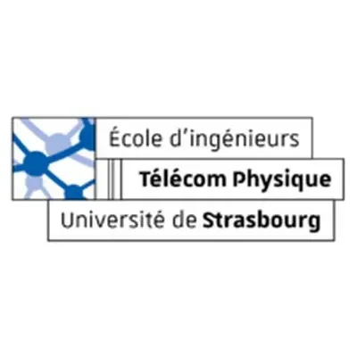
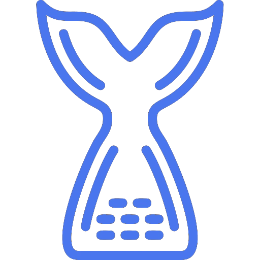

Hello there, I'm
Lilyan
Surgical Robotics Engineer
I'm a medical technology engineer holding an engineering diploma and a Master's in Imaging, Robotics and Life Sciences, topped by a PhD in Surgical Robotics from Sorbonne Université.
During my doctoral work, I developed application-driven robotic assistance solutions for spine surgery—bridging scientific research and real-world clinical challenges. In industry, I've complemented my R&D background with hands-on medical device quality validation under ISO 13485, ensuring that innovation meets the highest standards.
I thrive at the intersection of technological innovation and healthcare needs, and outside the lab I stay curious and disciplined as an assistant freediving instructor, competitive triathlete, and cinema enthusiast.
Sorbonne Université, Institut des Systèmes Intelligents et de Robotique - Paris (France)
Zimmer Biomet Robotics - Montpellier (France)
Sorbonne Université, Institut des Systèmes Intelligents et de Robotique - Paris (France)
Sorbonne Université - Paris (France)
University of Strasbourg - Strasbourg (France)

Télécom Physique Strasbourg - Strasbourg (France)
Lycée Kléber - Strasbourg (France)

Freediving